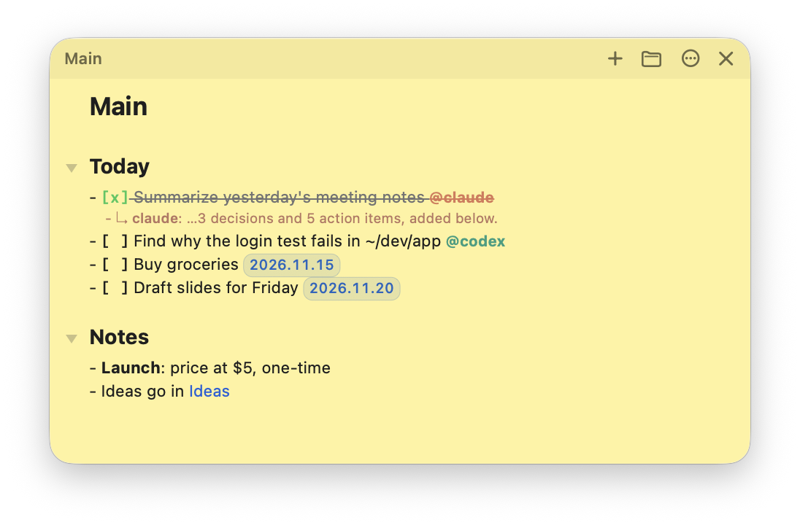

Twinkle
Twinkle
Markdown sticky notes for your Mac desktop. Mac 바탕화면에 붙이는 마크다운 메모.
Tag a to-do with @claude, @codex or @grok and the agent does it. The result shows up as a comment.
할 일에 @claude, @codex, @grok를 붙이면 에이전트가 처리하고, 결과를 댓글로 남겨요.

What it does하는 일
Sticky notes바탕화면 메모
Each note is a small window on your desktop. Position, color and folded headings are remembered.
메모마다 바탕화면에 작은 창 하나. 위치, 색, 접은 제목을 기억해요.
Agents에이전트
Tagged to-dos run through the CLI you already use: Claude Code, Codex or Grok Build. Untagged to-dos are left alone.
태그 붙은 할 일을 이미 쓰는 CLI(Claude Code, Codex, Grok Build)가 처리해요. 태그 없는 할 일은 건드리지 않아요.
Comments댓글
Results and questions appear under the to-do. Reply to continue the same session.
결과와 질문이 할 일 아래에 달려요. 답글을 달면 같은 세션으로 이어서 해요.
To-dos & calendar할 일·달력
A ```todo block collects to-dos from every note. A ```cal block puts due dates on a calendar.
```todo 블록은 모든 메모의 할 일을 모아요. ```cal 블록은 기한을 달력에 보여 줘요.
Widgets위젯
To-do list and calendar widgets for the desktop and Notification Center.
할 일 목록과 달력을 바탕화면·알림 센터 위젯으로 둘 수 있어요.
Plain files평범한 파일
Notes are .md files in a folder you pick. No account, no server.
메모는 내가 고른 폴더의 .md 파일이에요. 계정도 서버도 없어요.
How it works쓰는 법
-
Write a to-do with a tag.
할 일에 태그를 붙여 써요.
- [ ] @claude fix the typo in ~/dev/app/README.md- [ ] @claude ~/dev/app/README.md 오타 고쳐줘 -
Press Enter. The agent picks it up while your Mac is on.
엔터를 치면 Mac이 켜져 있는 동안 에이전트가 가져가요.
-
Read the result in the comment under the to-do. Reply to follow up.
결과는 할 일 아래 댓글로 와요. 더 시킬 게 있으면 답글을 달아요.
Questions자주 묻는 것
- Do the agents cost extra?
- 에이전트 비용은 따로인가요?
- Yes. Twinkle runs the CLI you have installed, on your own plan.
- 네. Twinkle은 설치된 CLI를 실행할 뿐이고, 요금은 각 서비스 요금제를 따라요.
- Where are my notes stored?
- 메모는 어디에 저장되나요?
- In a folder on your Mac, as Markdown files. Twinkle doesn't upload them anywhere.
- 내 Mac 폴더에 마크다운 파일로요. Twinkle은 어디에도 올리지 않아요.
- The source is on GitHub. What does $5 get me?
- 소스가 GitHub에 있는데 $5는 뭐에 내는 건가요?
- A signed, notarized app that opens without warnings, plus updates. You can also build it yourself.
- 경고 없이 열리는 서명·공증된 앱과 업데이트예요. 직접 빌드해도 돼요.
- Where do I get help?
- 문의는 어디로 하나요?
- Open an issue on GitHub.
- GitHub 이슈에 남겨 주세요.